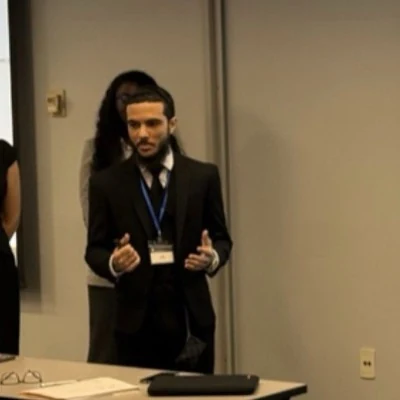

About Junior
Quantitative discipline with an ownership mindset.
Junior Hernandez Paulino is an AI trainer and domain expert studying economics and mathematics at Lehman College with a minor in actuarial mathematics. His work sits at the intersection of model evaluation, P&C pricing, economic research, quantitative risk, and long-term business building.

A practical quantitative path
As a Handshake AI domain expert, Junior develops prompts and test cases, designs scoring rubrics, performs quantitative QA, classifies model failures, and writes reproducible feedback across economics, finance, mathematics, and actuarial-style risk. The work requires technical judgment, adversarial testing, and strict confidentiality.
His actuarial work includes the CAS Student Central Summer Program and a personal-auto pricing case study covering claim frequency, claim severity, pure premiums, model validation, aggregate-loss simulation, VaR, and TVaR. The work draws on probability, statistics, regression, financial mathematics, Python, R, SQL, and Excel.
Across two Federal Reserve Challenge cycles, a merit-based Lehman financial research scholarship, Oracle’s REACH apprenticeship, and Stout’s winning Future Leaders in Finance team, Junior has converted complex evidence into recommendations that can be questioned, defended, and used.
Junior is preparing for actuarial Exams P and FM and is pursuing opportunities in actuarial analysis, insurance pricing, model evaluation, quantitative research, and risk analysis.
Professional principles
- Evidence before assertion. Assumptions and limitations should be visible.
- Clarity before complexity. A model is useful only when its result can be explained and challenged.
- Long-term discipline. Sustainable business value comes from risk control, sound governance, and consistent execution.